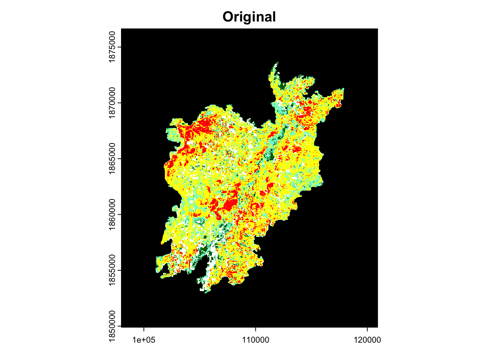
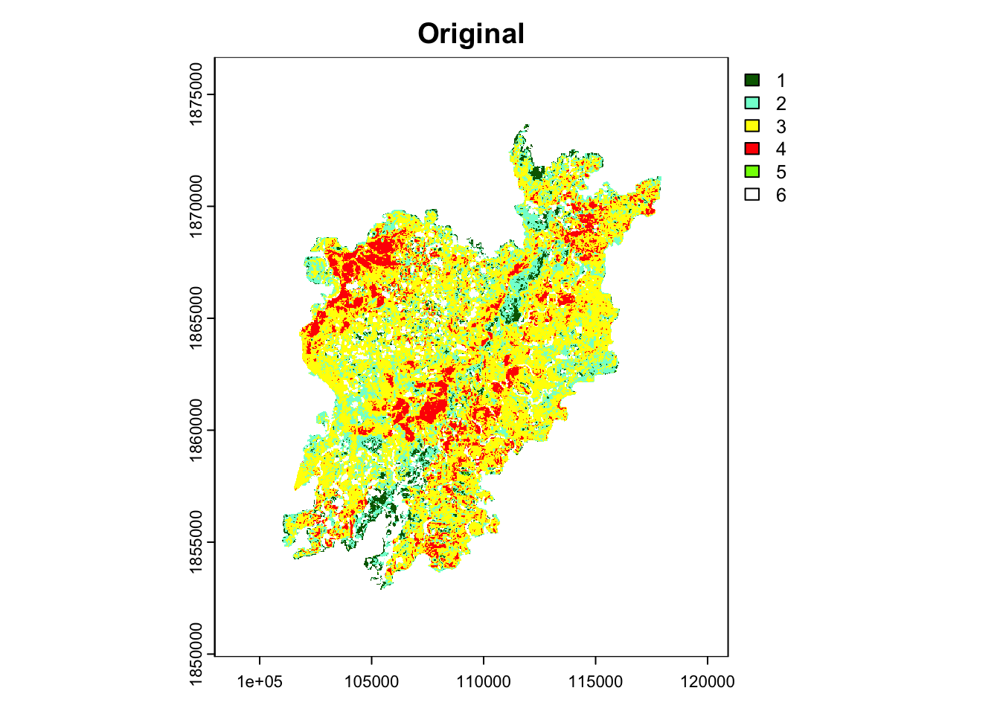
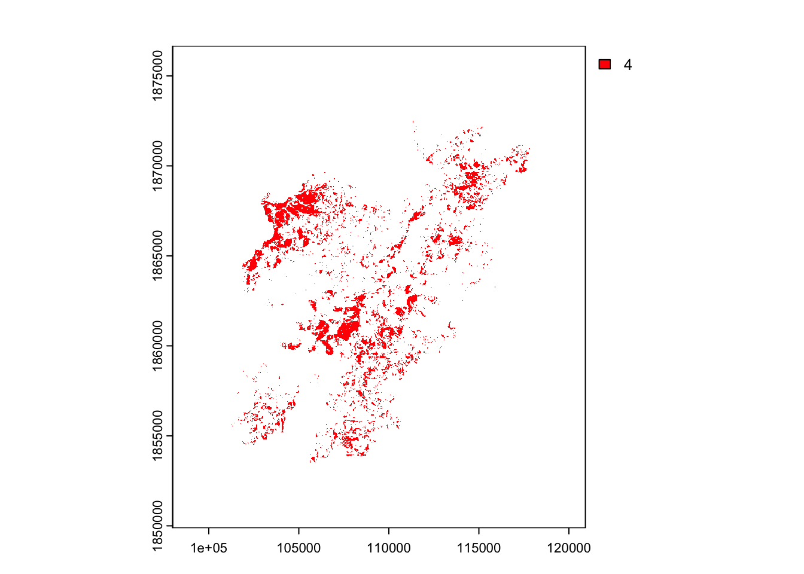

terra 1.7.78Linking to GEOS 3.11.0, GDAL 3.5.3, PROJ 9.1.0; sf_use_s2() is TRUEAs part of my work with the Past, Present and Future of Boreal Feedbacks project, this summer I’ll be sampling forest composition and structure in forests that have reburned. One of our early goals with this project was to sample reburned forests off the road system - in part because they tend to go unsampled for obvious reasons1, and in part because we’re combining modern observations of reburned forests with lake sediment records that provide context on the last 2,500 years of forest composition, and those lakes are off the road system.
1 Alaska is big
2 For the record, also not how I pick field sites
Functionally, that means helicopter work (!!). Going into it, I was blinded a bit by the excitement of flying helicopters (beautiful views!!), and hadn’t braced myself for some of the challenges (also dangerous!!). It added pressure to picking field sites: helicopters can only land in so many spots, and it’s an expensive privilege, so you can’t just wander into the woods and pick a spot2.
I’ve been digging through fire perimeter datasets, trying to locate fires that overlap.
There are functionally two forms of fire perimeter data in Alaska: the Alaska Large Fire Database (ALFD) and the Monitoring Trends in Burn Severity (MTBS) dataset (for more, see link to an incomplete glossary of Alaska data products).
The Alaska Large Fire Database, often referred to as “Alaska Large Fire”3 in my collaborative spaces for reasons I’m realizing I don’t know, is maintained by the Alaska Fire Service and contains fire perimeter data from 1942 to the present. It was developed in the 90s when collaborators from the Environmental Research institute of Michigan and the Alaska Interagency Coordination Center digitized and standardized perimeter information from fire reports that dated back to 1942 (Kasischke, Williams, and Barry 2002).
3 said quickly, all in one word
Using ground surveys, airborne surveys and aerial or satellite photography
MTBS data consists of burn severity and extent information on large fires4 across the US from 1984 to the present. Both burn severity and fire extent are derived from Landsat or Sentinel-2 data at a spatial resolution of 30 meters and a temporal resolution of 16 days or so - images are constructed pre- and post-fire to compare Normalized Burn Ratio (NBR) or Differenced Normalized Burn Ratio (dNBR). From there, MTBS depicts severity as a gradient of vegetation response from low (not much vegetation response) to high (potentially complete combustion of vegetation)5.
4 defined here as 1,000 acres or bigger in the Western US
5 with additional categories for unburned, increased greenness or outliers caused by clouds, shadows, water bodies, etc
Alaska Large Fire Database has been assumed to overestimate burned area within mapped fire events (Chen et al. 2021), and produces consistently higher estimates of area burned across Alaska compared to MTBS.
In contrast, MTBS excludes fires less than 1,000 acres, so there are clear reasons to believe it underestimates burned area.
Understanding the strengths and drawbacks of both is important - in the context of reburning, MTBS is a particularly useful database - older fire perimeters from ALFD become less precise (cite), sometimes overestimating where the fires overlapped (Buma et al. 2022).
[Brief aside on self-regulating fire]
Fun that as I was writing this, I was immediately corrected - the USGS has released updated fire perimeters for the National Wildlife Refuges
Now, this only covers the Wildlife Refuges in Alaska, but those refuges cover about 30% of the state (and represent 80% of all the land in the National Fish and Wildlife Refuge System), so that’s still a pretty big chunk of landscape.
I wanted to filter out pixels within MTBS that burned at high severity in both fires.
terra 1.7.78Linking to GEOS 3.11.0, GDAL 3.5.3, PROJ 9.1.0; sf_use_s2() is TRUEAn aside - I’m storing these files on a remote server. The bash code below mounts the folder I need so I can access it in Quarto.
open smb://10.60.2.10/FF_Lab/personal_storage/kate_storage/GIS/We’ll start with loading in the DNBR raster from the Dall City fire - this fire burned 530,717 acres in 2004.
DallCity <- rast("/Volumes/GIS/site selection 2024/targetMTBS/Yukon/DallCity_2004/ak6628114999320040706_20010623_20050720_dnbr6.tif")
plot(DallCity, main = "Original")
| Col1 | Col2 | Col3 |
|---|---|---|
| 1 | unburned to low severity | |
| 2 | low severity | |
| 3 | moderate severity | |
| 4 | high severity |
We’ll get rid of the black border:
DallCity <- subst(DallCity, 0, NA)
plot(DallCity, main = "Original")
Within that perimeter, here are the cells (again, 30 meter resolution) that burned at high severity (as defined by MTBS):
DallCityHS <- subst(DallCity, 4, 4,
others = NA)
plot(DallCityHS, main = "High")
Now, we can use the same indexing to trim down to just the high severity cells:
DallCityHS <- trim(DallCityHS)
plot(DallCityHS, main = "Trim")
The Dall City fire overlaps with West fork, which burned XX acres in
WestFork <- rast("/Volumes/GIS/site selection 2024/targetMTBS/Yukon/WestFork_2015/ak6635014986720150620_20140705_20160624_dnbr6.tif")
plot(WestFork, main = "Original")
WestFork <- subst(WestFork, 0, NA)
plot(WestFork, main = "Original")
WestForkHS <- subst(WestFork, 4, 4,
others = NA)
plot(WestForkHS)
overlap <- intersect(WestForkHS, DallCityHS)
plot(overlap)
yukon2xHS <- subst(overlap, TRUE, 1, others = NA)
plot(yukon2xHS)
yukon2xHS <- trim(yukon2xHS)
plot(yukon2xHS)
yukon2xHS_shp <- as.polygons(yukon2xHS)
plot(yukon2xHS_shp)
# writeVector(yukon2xHS_shp,
# "/Users/katherinehayes/Desktop/yukon2xHS.shp",
# overwrite = TRUE)## Kanuti
## BTTS 1991 #####################################
KanBTT <- rast("/Volumes/GIS/site selection 2024/targetMTBS/Kanuti/BTTS1991/ak6670715154819910630_19860613_19920605_dnbr6.tif")
plot(KanBTT, main = "Original")
KanBTT <- subst(KanBTT, 0, NA)
plot(KanBTT, main = "Original")
KanBTTHS <- subst(KanBTT, 4, 4,
others = NA)
plot(KanBTTHS)
Next, we’ll look
Evan <- rast("/Volumes/GIS/site selection 2024/targetMTBS/Kanuti/Evansville2004/ak6687815131320040706_20020624_20050616_dnbr6.tif")
plot(Evan, main = "Original")
Evan <- subst(Evan, 0, NA)
plot(Evan, main = "Original")
EvanHS <- subst(Evan, 4, 4,
others = NA)
plot(EvanHS)
## Combining #######################
overlap <- intersect(KanBTTHS, EvanHS)
plot(overlap)
Kanuti2xHS <- subst(overlap, TRUE, 1, others = NA)
plot(Kanuti2xHS)
Kanuti2xHS <- trim(Kanuti2xHS)
plot(Kanuti2xHS)
Kanuti2xHS_shp <- as.polygons(Kanuti2xHS)
plot(Kanuti2xHS_shp)
#writeVector(Kanuti2xHS_shp,
# "/Users/katherinehayes/Desktop/Kanuti2xHS.shp",
# overwrite = TRUE) ## BTT 1994 #####################################
BTT <- rast("/Volumes/GIS/site selection 2024/targetMTBS/LastChance/BTT1994/ak6712115052019940608_19860823_19950825_dnbr6.tif")
BTT <- subst(BTT, 0, NA)
plot(BTT, main = "Original")
BTThs <- subst(BTT, 4, 4,
others = NA)
plot(BTThs)
## Chapman 2005 #####################################
Chapman <- rast("/Volumes/GIS/site selection 2024/targetMTBS/LastChance/Chapman2005/ak6707615031720050530_20020617_20060612_dnbr6.tif")
plot(Chapman, main = "Original")
Chapman <- subst(Chapman, 0, NA)
plot(Chapman, main = "Original")
ChapmanHS <- subst(Chapman, 4, 4,
others = NA)
plot(ChapmanHS)
## Combining #######################
overlap <- intersect(BTThs, ChapmanHS)
plot(overlap)
Last2xHS <- subst(overlap, TRUE, 1, others = NA)
plot(Last2xHS)
Last2xHS <- trim(Last2xHS)
plot(Last2xHS)
Last2xHS_shp <- as.polygons(Last2xHS)
plot(Last2xHS_shp)
#writeVector(Last2xHS_shp,
# "/Users/katherinehayes/Desktop/LastChance2xHS.shp",
# overwrite = TRUE)From there, you
Carson et al. from the USGS has put out an analysis updating fire perimeters in Alaska.
sessionInfo()R version 4.4.1 (2024-06-14)
Platform: aarch64-apple-darwin20
Running under: macOS Sonoma 14.0
Matrix products: default
BLAS: /Library/Frameworks/R.framework/Versions/4.4-arm64/Resources/lib/libRblas.0.dylib
LAPACK: /Library/Frameworks/R.framework/Versions/4.4-arm64/Resources/lib/libRlapack.dylib; LAPACK version 3.12.0
locale:
[1] en_US.UTF-8/en_US.UTF-8/en_US.UTF-8/C/en_US.UTF-8/en_US.UTF-8
time zone: America/Chicago
tzcode source: internal
attached base packages:
[1] stats graphics grDevices utils datasets methods base
other attached packages:
[1] sf_1.0-16 terra_1.7-78
loaded via a namespace (and not attached):
[1] digest_0.6.37 codetools_0.2-20 fastmap_1.2.0 xfun_0.47
[5] magrittr_2.0.3 e1071_1.7-14 KernSmooth_2.23-24 knitr_1.48
[9] htmltools_0.5.8.1 rmarkdown_2.28 classInt_0.4-10 cli_3.6.3
[13] grid_4.4.1 DBI_1.2.3 proxy_0.4-27 class_7.3-22
[17] compiler_4.4.1 rstudioapi_0.16.0 tools_4.4.1 evaluate_1.0.0
[21] Rcpp_1.0.13 yaml_2.3.10 rlang_1.1.4 jsonlite_1.8.9
[25] htmlwidgets_1.6.4 units_0.8-5